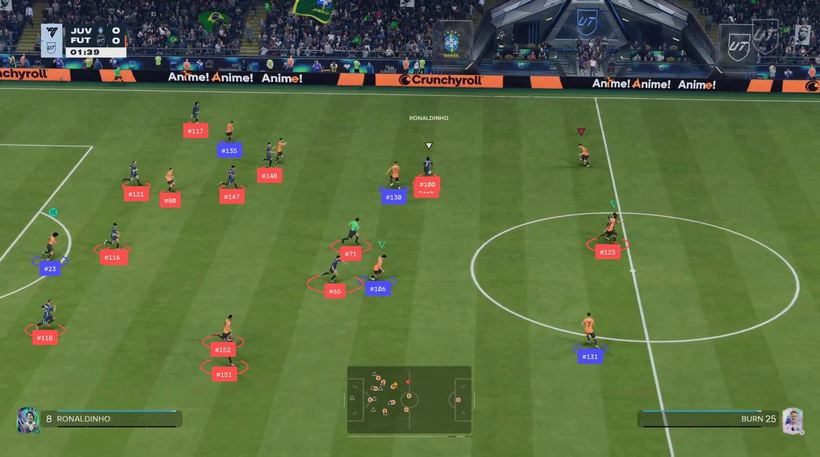
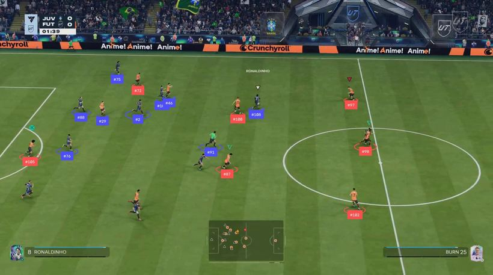
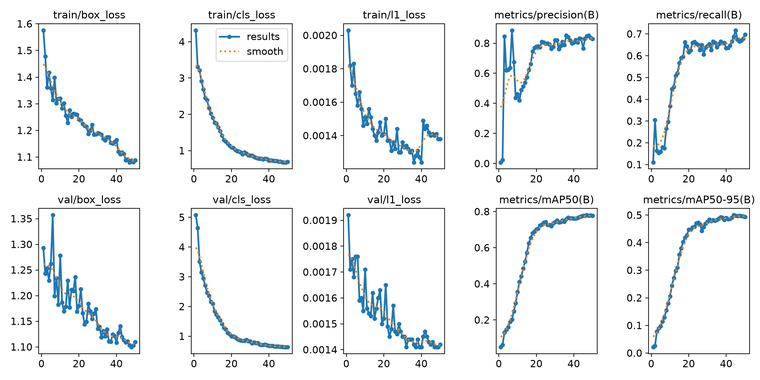

★ currently rebuilding depth in modern computer vision — detection, tracking, projective
geometry and evaluation — and publishing the failures alongside the results.
who i am
AI / Computer Vision engineer with 7+ years across production CV, backend engineering
and solutions architecture. I have shipped CNN models to edge hardware (NVIDIA Jetson) and to
cloud pipelines on AWS and Azure, cut infrastructure cost 5× by moving GPU workloads to CPU,
and led the customer-facing side of a video-analytics platform through a 300% increase in
connected cameras.
Based in Berlin, working deeper into computer vision, robotics simulation and evaluation. The thing I care most about professionally is knowing whether a number means anything — most of my recent writing is about results that looked right and were not.
Based in Berlin, working deeper into computer vision, robotics simulation and evaluation. The thing I care most about professionally is knowing whether a number means anything — most of my recent writing is about results that looked right and were not.
work experience
Senior Software Engineer
Perfios — India
July 2023 – January 2026
- Led migration of the core data aggregation and analytics engine from R to Python, improving maintainability and scalability.
- Refactored and modularised legacy code into reusable components across multiple pipelines, cutting processing cost ~50%.
- Designed a sequential analytics pipeline built for extensibility and future enrichment.
- Worked across product, data science and engineering to gather requirements and ship features.
Python Developer
Cisco (via TEKsystems) — India
April 2023 – June 2023
- Designed and executed automated and manual test cases against defined test procedures.
- Worked with business analysis to interpret and refine functional requirements.
Solutions Architect & Customer Success Lead
Sentry AI — India
February 2022 – February 2023
- Increased Net Revenue Retention by 65% and scaled connected cameras by 300% through platform improvements driven by customer feedback.
- Re-architected a multi-page web application into a single-page application, improving integration, usability and accessibility.
- Led analysis, design and roadmap, mapping current-state to future-state architecture.
- Built analytics reports and dashboards giving customers insight into their own metrics.
- Owned QA, bug resolution and performance work; onboarded customers and ran product walkthroughs.
Backend Software Engineer
Sentry AI — India
December 2020 – January 2022
- Deployed CNN models to production pipelines on AWS EC2 and Azure VMs, holding stability and performance.
- Migrated GPU workloads to CPU servers, cutting infrastructure cost 5× (≈80%).
- Implemented image caching with AWS ElastiCache/Redis across the pipeline, halving processing time and cost.
- Built backend services on EC2, DynamoDB and Lambda for high availability, low latency and traffic-based scaling.
- Established a secure inter-cloud VPN between AWS VPC and Azure Virtual Networks.
- Migrated authorisation from OAuth to OAuth2 to integrate CRM with AWS backend systems.
Computer Vision Engineer
SS Automation Solutions — India
August 2019 – May 2020
- Developed CNNs for domain-specific industrial applications and optimised them for edge deployment.
- Worked with NVIDIA embedded platforms — Jetson, DIGITS, Transfer Learning Toolkit — prototyping perception in simulated and bench environments.
- Designed embedded image-processing hardware and system architecture for multi-camera vision solutions.
- Improved system efficiency ~40% by optimising CNNs for embedded targets.
Associate Technical Operations — Security Delivery Specialist
IBM — India
February 2018 – May 2019
- Managed Role-Based Access Control lifecycle, defining roles and resource groups to client security standards.
- Handled change management, impact assessment and access reviews across Active Directory, DBMS and UNIX.
timeline
FEB 2018 — MAY 2019
IBM · Security Delivery Specialist
Role-based access control across Active Directory, DBMS and UNIX. Change management, impact assessment, access reviews.
AUG 2019 — MAY 2020
SS Automation Solutions · Computer Vision Engineer
First production CV work. CNNs optimised for NVIDIA Jetson via DIGITS and the Transfer Learning Toolkit; embedded image-processing hardware for multi-camera industrial vision. ~40% efficiency gain on embedded targets.
DEC 2020 — JAN 2022
Sentry AI · Backend Software Engineer
CNN models to production on AWS EC2 and Azure VMs. Cut infrastructure cost 5× by moving GPU workloads to CPU; halved processing time with ElastiCache/Redis image caching. Secure inter-cloud VPN between AWS VPC and Azure VNets.
FEB 2022 — FEB 2023
Sentry AI · Solutions Architect & Customer Success Lead
Took the platform from engineering into the customer relationship. +65% net revenue retention, +300% connected cameras, and a multi-page app re-architected into an SPA.
APR — JUN 2023
Cisco (via TEKsystems) · Python Developer
Automated and manual test design against defined procedures.
JUL 2023 — JAN 2026
Perfios · Senior Software Engineer
Led an R → Python migration of the core data aggregation and analytics engine, cutting processing cost ~50% and rebuilding it as reusable, extensible components.
2026 · BERLIN
Traffic Lens mAP50 0.280
Vehicle detection, tracking, line-crossing counts and calibrated speed on 4K motorway footage. YOLO26 fine-tuned on VisDrone — ~11× over a properly remapped baseline.

YOLO26n + ByteTrack — IDs, motion traces, crossing counter, homography-derived speeds

50 epochs on VisDrone. The first run stopped at 20 with the curve still climbing — a schedule artifact reported as a result.
2026 · BERLIN
Soccer Analytics HOTA 52.4 / 81.7
Detection, tracking, unsupervised team assignment and pitch homography — evaluated against SoccerNet ground truth with TrackEval rather than a proxy. Given oracle boxes the tracker lands 4 points off published state of the art.

before — team decided from one crop at track birth, so labels land on both kits

after — grass masked out, team voted over 15 frames, keepers and referees detected as roles

Retrained on 4,275 SoccerNet frames. 14× the data bought 2.8 HOTA over no fine-tune at all — the real return was the goalkeeper and referee classes.
2026 · ONGOING
Writing up the failures
Five interactive write-ups, including a post-mortem on a detector that scored 0.958 AP on its validation set and made the pipeline 2.5× worse.
read it →
testimonials — what the numbers say
soccer-analytics
HOTA 52.4 / 81.7
Evaluated tracking against SoccerNet ground truth with TrackEval. Given oracle boxes the tracker lands 4 points off published state of the art with no tuning. → read it
Evaluated tracking against SoccerNet ground truth with TrackEval. Given oracle boxes the tracker lands 4 points off published state of the art with no tuning. → read it
the one to read
0.958 AP, and 2.5× worse
I fine-tuned a detector. It scored 0.958 on its validation set and made the pipeline 2.5× worse than no fine-tune at all. The validation score was measuring a different distribution. → the post-mortem
I fine-tuned a detector. It scored 0.958 on its validation set and made the pipeline 2.5× worse than no fine-tune at all. The validation score was measuring a different distribution. → the post-mortem
traffic-lens
five silent bugs
A run that finished without a single exception and was wrong in five places — a baseline grading airplane predictions against van boxes, speeds off 8×. → LEARNINGS.md
A run that finished without a single exception and was wrong in five places — a baseline grading airplane predictions against van boxes, speeds off 8×. → LEARNINGS.md
blood-cell-classifier
96.76% vs 96.61%
ConvNeXt V2 against ViT on identical recipes — and the validation ranking flipped on test. → repo
ConvNeXt V2 against ViT on identical recipes — and the validation ranking flipped on test. → repo
skills
| vision | OpenCV · YOLO26/v8 · ByteTrack · CNNs · transfer learning · object detection · intelligent video analytics · model quantisation |
| learning | PyTorch · TensorFlow · Ultralytics · scikit-learn · Weights & Biases |
| evaluation | HOTA / TrackEval · SoccerNet · mAP, IoU, PR curves — and spotting when a score measures the wrong distribution |
| robotics | NVIDIA Isaac Sim · ROS 2 · Isaac Lab (RL) · Replicator · Jetson deployment |
| cloud | AWS (EC2, ECS, Lambda, ElastiCache, DynamoDB, SNS, API Gateway, VPC) · Azure (VNets, VMs) · GCP · RunPod |
| data | Python · SQL · Linux · pandas · Bitbucket · Jira |
| professional | solutions architecture · requirements gathering · process optimisation · IT security · client relations · technical training |
certifications
| Coursera | Applied AI with Deep Learning · Python for Data Science · Data Analysis with Python · Data Visualization with Python · Databases and SQL for Data Science |
| Cognitive Class | Deep Learning with TensorFlow |